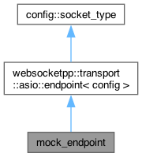
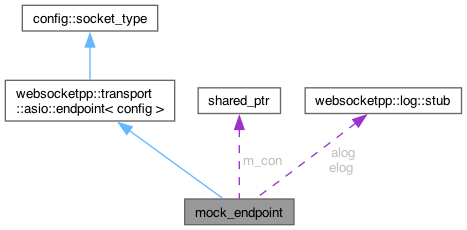
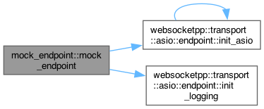
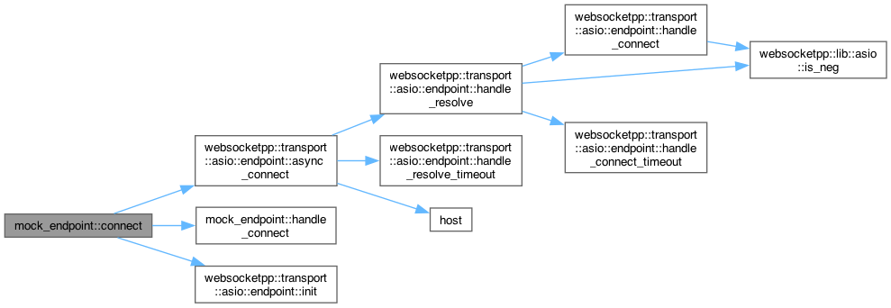

Loading...
Searching...
No Matches
mock_endpoint Struct Reference
Inheritance diagram for mock_endpoint:

Collaboration diagram for mock_endpoint:

Public Types | |
| typedef websocketpp::transport::asio::endpoint< config > | base |
 Public Types inherited from websocketpp::transport::asio::endpoint< config > Public Types inherited from websocketpp::transport::asio::endpoint< config > | |
| typedef endpoint< config > | type |
| Type of this endpoint transport component. | |
| typedef config::concurrency_type | concurrency_type |
| Type of the concurrency policy. | |
| typedef config::socket_type | socket_type |
| Type of the socket policy. | |
| typedef config::elog_type | elog_type |
| Type of the error logging policy. | |
| typedef config::alog_type | alog_type |
| Type of the access logging policy. | |
| typedef socket_type::socket_con_type | socket_con_type |
| Type of the socket connection component. | |
| typedef socket_con_type::ptr | socket_con_ptr |
| Type of a shared pointer to the socket connection component. | |
| typedef asio::connection< config > | transport_con_type |
| typedef transport_con_type::ptr | transport_con_ptr |
| typedef lib::asio::io_service * | io_service_ptr |
| Type of a pointer to the ASIO io_service being used. | |
| typedef lib::shared_ptr< lib::asio::ip::tcp::acceptor > | acceptor_ptr |
| Type of a shared pointer to the acceptor being used. | |
| typedef lib::shared_ptr< lib::asio::ip::tcp::resolver > | resolver_ptr |
| Type of a shared pointer to the resolver being used. | |
| typedef lib::shared_ptr< lib::asio::steady_timer > | timer_ptr |
| Type of timer handle. | |
| typedef lib::shared_ptr< lib::asio::io_service::work > | work_ptr |
| Type of a shared pointer to an io_service work object. | |
Public Member Functions | |
| mock_endpoint () | |
| void | connect (std::string u) |
| void | handle_connect (connection_ptr con, websocketpp::lib::error_code const &ec) |
| Public Member Functions inherited from websocketpp::transport::asio::endpoint< config > | |
| endpoint () | |
| ~endpoint () | |
| bool | is_secure () const |
| Return whether or not the endpoint produces secure connections. | |
| void | init_asio (io_service_ptr ptr, lib::error_code &ec) |
| initialize asio transport with external io_service (exception free) | |
| void | init_asio (io_service_ptr ptr) |
| initialize asio transport with external io_service | |
| void | init_asio (lib::error_code &ec) |
| Initialize asio transport with internal io_service (exception free) | |
| void | init_asio () |
| Initialize asio transport with internal io_service. | |
| void | set_tcp_pre_init_handler (tcp_init_handler h) |
| Sets the tcp pre init handler. | |
| void | set_tcp_init_handler (tcp_init_handler h) |
| Sets the tcp pre init handler (deprecated) | |
| void | set_tcp_post_init_handler (tcp_init_handler h) |
| Sets the tcp post init handler. | |
| void | set_listen_backlog (int backlog) |
| Sets the maximum length of the queue of pending connections. | |
| void | set_reuse_addr (bool value) |
| Sets whether to use the SO_REUSEADDR flag when opening listening sockets. | |
| lib::asio::io_service & | get_io_service () |
| Retrieve a reference to the endpoint's io_service. | |
| lib::asio::ip::tcp::endpoint | get_local_endpoint (lib::asio::error_code &ec) |
| Get local TCP endpoint. | |
| void | listen (lib::asio::ip::tcp::endpoint const &ep, lib::error_code &ec) |
| Set up endpoint for listening manually (exception free) | |
| void | listen (lib::asio::ip::tcp::endpoint const &ep) |
| Set up endpoint for listening manually. | |
| template<typename InternetProtocol > | |
| void | listen (InternetProtocol const &internet_protocol, uint16_t port, lib::error_code &ec) |
| Set up endpoint for listening with protocol and port (exception free) | |
| template<typename InternetProtocol > | |
| void | listen (InternetProtocol const &internet_protocol, uint16_t port) |
| Set up endpoint for listening with protocol and port. | |
| void | listen (uint16_t port, lib::error_code &ec) |
| Set up endpoint for listening on a port (exception free) | |
| void | listen (uint16_t port) |
| Set up endpoint for listening on a port. | |
| void | listen (std::string const &host, std::string const &service, lib::error_code &ec) |
| Set up endpoint for listening on a host and service (exception free) | |
| void | listen (std::string const &host, std::string const &service) |
| Set up endpoint for listening on a host and service. | |
| void | stop_listening (lib::error_code &ec) |
| Stop listening (exception free) | |
| void | stop_listening () |
| Stop listening. | |
| bool | is_listening () const |
| Check if the endpoint is listening. | |
| std::size_t | run () |
| wraps the run method of the internal io_service object | |
| std::size_t | run_one () |
| wraps the run_one method of the internal io_service object | |
| void | stop () |
| wraps the stop method of the internal io_service object | |
| std::size_t | poll () |
| wraps the poll method of the internal io_service object | |
| std::size_t | poll_one () |
| wraps the poll_one method of the internal io_service object | |
| void | reset () |
| wraps the reset method of the internal io_service object | |
| bool | stopped () const |
| wraps the stopped method of the internal io_service object | |
| void | start_perpetual () |
| Marks the endpoint as perpetual, stopping it from exiting when empty. | |
| void | stop_perpetual () |
| Clears the endpoint's perpetual flag, allowing it to exit when empty. | |
| timer_ptr | set_timer (long duration, timer_handler callback) |
| Call back a function after a period of time. | |
| void | handle_timer (timer_ptr, timer_handler callback, lib::asio::error_code const &ec) |
| Timer handler. | |
| void | async_accept (transport_con_ptr tcon, accept_handler callback, lib::error_code &ec) |
| Accept the next connection attempt and assign it to con (exception free) | |
| void | async_accept (transport_con_ptr tcon, accept_handler callback) |
| Accept the next connection attempt and assign it to con. | |
Public Attributes | |
| connection_ptr | m_con |
| config::alog_type | alog |
| config::elog_type | elog |
Additional Inherited Members | |
| Protected Member Functions inherited from websocketpp::transport::asio::endpoint< config > | |
| void | init_logging (alog_type *a, elog_type *e) |
| Initialize logging. | |
| void | handle_accept (accept_handler callback, lib::asio::error_code const &asio_ec) |
| void | async_connect (transport_con_ptr tcon, uri_ptr u, connect_handler cb) |
| Initiate a new connection. | |
| void | handle_resolve_timeout (timer_ptr, connect_handler callback, lib::error_code const &ec) |
| DNS resolution timeout handler. | |
| void | handle_resolve (transport_con_ptr tcon, timer_ptr dns_timer, connect_handler callback, lib::asio::error_code const &ec, lib::asio::ip::tcp::resolver::iterator iterator) |
| void | handle_connect_timeout (transport_con_ptr tcon, timer_ptr, connect_handler callback, lib::error_code const &ec) |
| Asio connect timeout handler. | |
| void | handle_connect (transport_con_ptr tcon, timer_ptr con_timer, connect_handler callback, lib::asio::error_code const &ec) |
| lib::error_code | init (transport_con_ptr tcon) |
| Initialize a connection. | |
Detailed Description
Definition at line 138 of file timers.cpp.
Member Typedef Documentation
◆ base
Definition at line 139 of file timers.cpp.
Constructor & Destructor Documentation
◆ mock_endpoint()
|
inline |
Definition at line 141 of file timers.cpp.
141 {
144 init_asio();
145 }
Here is the call graph for this function:

Member Function Documentation
◆ connect()
|
inline |
Definition at line 147 of file timers.cpp.
147 {
150
151 BOOST_CHECK( uri->get_valid() );
153
154 base::async_connect(
155 m_con,
156 uri,
157 websocketpp::lib::bind(
159 this,
160 m_con,
161 websocketpp::lib::placeholders::_1
162 )
163 );
164 }
void async_connect(transport_con_ptr tcon, uri_ptr u, connect_handler cb)
Initiate a new connection.
Definition endpoint.hpp:821
Definition uri.hpp:48
Definition timers.cpp:115
void handle_connect(connection_ptr con, websocketpp::lib::error_code const &ec)
Definition timers.cpp:166
Here is the call graph for this function:

Here is the caller graph for this function:
◆ handle_connect()
|
inline |
Definition at line 166 of file timers.cpp.
167 {
168 BOOST_CHECK( !ec );
169 con->start();
170 }
Here is the caller graph for this function:
Member Data Documentation
◆ alog
| config::alog_type mock_endpoint::alog |
Definition at line 173 of file timers.cpp.
◆ elog
| config::elog_type mock_endpoint::elog |
Definition at line 174 of file timers.cpp.
◆ m_con
| connection_ptr mock_endpoint::m_con |
Definition at line 172 of file timers.cpp.
The documentation for this struct was generated from the following file:
- libraries/fc/vendor/websocketpp/test/transport/asio/timers.cpp